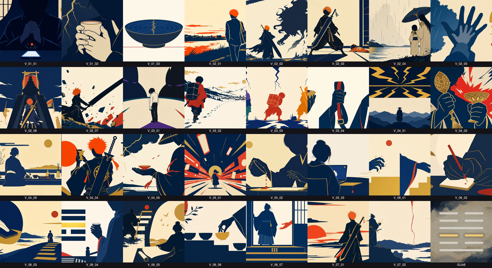
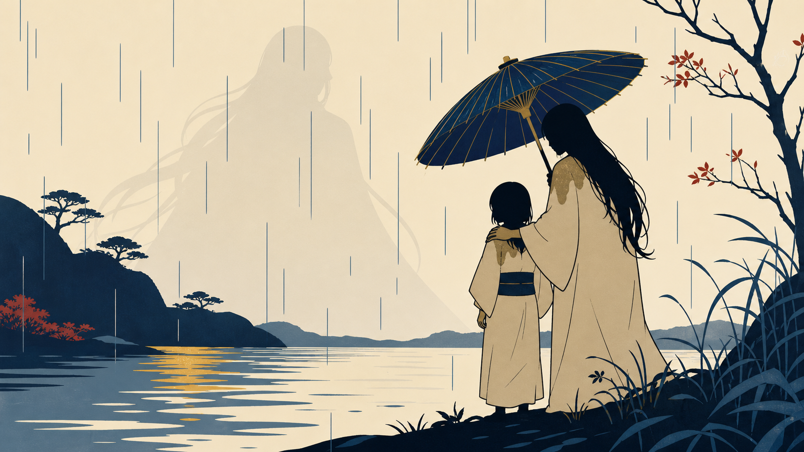
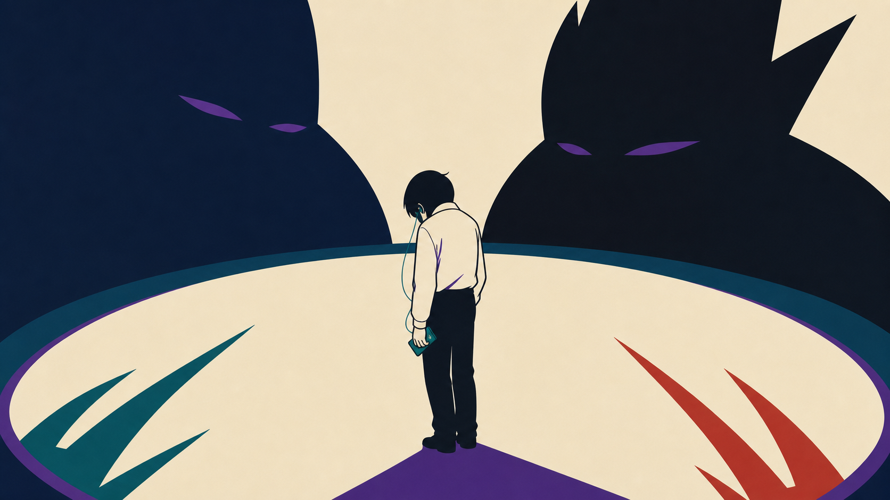
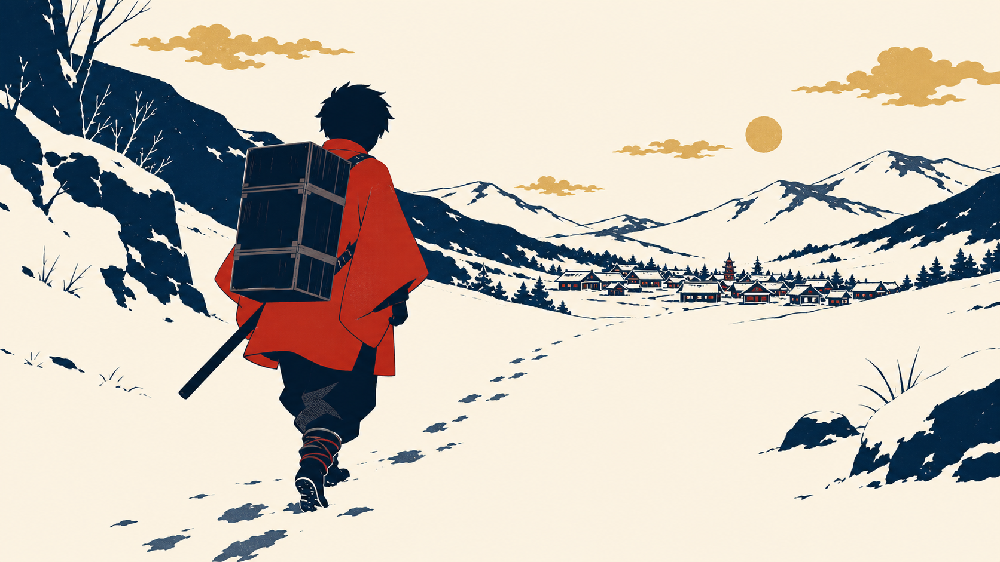

<meta name="robots" content="noindex, nofollow">
<title>ep37 シーン画像32枚 確認 — BLEACH(一護)×震</title>
<style>
  :root { color-scheme: dark; }
  * { box-sizing: border-box; }
  body {
    margin: 0;
    background: #121216;
    color: #eceef1;
    font-family: -apple-system, BlinkMacSystemFont, "Hiragino Sans", "Yu Gothic", sans-serif;
    line-height: 1.7;
    padding: 0 0 64px;
  }
  header {
    padding: 28px 20px 20px;
    background: linear-gradient(180deg, #1c1c24, #121216);
    border-bottom: 1px solid #2a2a33;
  }
  header h1 {
    margin: 0 0 6px;
    font-size: 1.3rem;
    letter-spacing: 0.02em;
  }
  header .meta {
    font-size: 0.85rem;
    color: #9aa0ab;
  }
  main {
    max-width: 980px;
    margin: 0 auto;
    padding: 0 16px;
  }
  section {
    margin-top: 32px;
  }
  h2 {
    font-size: 1.05rem;
    border-left: 4px solid #d7a23a;
    padding-left: 10px;
    margin-bottom: 14px;
  }
  .tldr {
    background: #1a2a1e;
    border: 1px solid #2e5138;
    border-radius: 10px;
    padding: 16px 18px;
    font-size: 0.95rem;
  }
  .tldr ul {
    margin: 8px 0 0;
    padding-left: 20px;
  }
  .tldr li { margin-bottom: 4px; }
  .tag-pass {
    display: inline-block;
    background: #2e5138;
    color: #b7f0c4;
    font-size: 0.75rem;
    padding: 2px 8px;
    border-radius: 999px;
    margin-left: 6px;
  }
  .contact-wrap {
    overflow-x: auto;
    border: 1px solid #2a2a33;
    border-radius: 10px;
    background: #0c0c10;
  }
  .contact-wrap img {
    display: block;
    width: 100%;
    min-width: 640px;
    height: auto;
  }
  .warn-box {
    background: #2b2011;
    border: 1px solid #6b4e12;
    border-radius: 10px;
    padding: 16px 18px;
    font-size: 0.95rem;
  }
  .warn-box .icon { font-size: 1.1rem; }
  .focus-grid {
    display: grid;
    grid-template-columns: 1fr;
    gap: 20px;
    margin-top: 18px;
  }
  @media (min-width: 720px) {
    .focus-grid { grid-template-columns: repeat(3, 1fr); }
  }
  figure {
    margin: 0;
    background: #1a1a20;
    border: 1px solid #2a2a33;
    border-radius: 10px;
    overflow: hidden;
  }
  figure img {
    display: block;
    width: 100%;
    height: auto;
  }
  figcaption {
    padding: 10px 12px;
    font-size: 0.82rem;
    color: #c4c8d0;
  }
  figcaption b { color: #eceef1; }
  .decision-grid {
    display: grid;
    grid-template-columns: 1fr;
    gap: 14px;
  }
  @media (min-width: 720px) {
    .decision-grid { grid-template-columns: repeat(3, 1fr); }
  }
  .decision-card {
    background: #1a1a20;
    border: 1px solid #2a2a33;
    border-radius: 10px;
    padding: 16px;
  }
  .decision-card.recommend {
    border-color: #4a7a52;
    background: #16241a;
  }
  .decision-card h3 {
    margin: 0 0 8px;
    font-size: 0.95rem;
  }
  .decision-card p {
    margin: 0 0 8px;
    font-size: 0.85rem;
    color: #c4c8d0;
  }
  .decision-card textarea {
    width: 100%;
    min-height: 70px;
    background: #0c0c10;
    border: 1px solid #333;
    border-radius: 6px;
    color: #eceef1;
    padding: 8px;
    font-size: 0.85rem;
    font-family: inherit;
  }
  .badge-rec {
    display: inline-block;
    background: #4a7a52;
    color: #d9f5df;
    font-size: 0.7rem;
    padding: 2px 8px;
    border-radius: 999px;
    margin-bottom: 8px;
  }
  footer {
    max-width: 980px;
    margin: 40px auto 0;
    padding: 0 16px;
    font-size: 0.75rem;
    color: #6a707b;
  }
</style>

<header>
  <h1>ep37 シーン画像32枚 本人確認</h1>
  <div class="meta">第37話・content/057・BLEACH（黒崎一護）× 震卦 ／ 公開予定 2026-07-16 04:00 JST</div>
</header>

<main>

<section>
  <h2>TL;DR</h2>
  <div class="tldr">
    <ul>
      <li>32枚（V_01_01〜V_07_02 + GUA6）生成完了<span class="tag-pass">機械ゲート PASS</span></li>
      <li>identity監査：主役・黒崎一護 7/7カットで認識（意匠は一般化済み＝柄穴なし、既存キャラ意匠トレースなし）</li>
      <li>スタイル監査：写実ドリフト・文字風グリフ・斬月固有意匠を検出し修正済み</li>
      <li>判断が必要なのは対比カット2枚（V_03_01 / V_03_02）のみ。下の「判断ポイント」参照</li>
    </ul>
  </div>
</section>

<section>
  <h2>コンタクトシート（全32枚俯瞰）</h2>
  <div class="contact-wrap">
    
  </div>
</section>

<section>
  <h2>⚠️ 判断ポイント：対比カット2枚</h2>
  <div class="warn-box">
    <p><span class="icon">⚠️</span> <b>V_03_01（シンジ対比）</b> と <b>V_03_02（炭治郎対比）</b> は、他作品のキャラクターを<b>顔なし・固有意匠なし</b>（市松柄／初号機など既存キャラ意匠は不使用）というスタイル制約の中で表現したカット。<b>ブラインド監査では作品特定に至らなかった</b>（2周強化済み）。</p>
    <p style="margin-bottom:0;">これは安全弁（意匠トレース回避）とのトレードオフとして構造的に生じるもの。ナレーションが「シンジ」「炭治郎」と<b>名指しする設計</b>（絵コンテ承認済み）なので、実視聴では音声の文脈と合わせて識別される想定。画像単体のブラインド識別性とは切り分けて判断してほしい。</p>
  </div>

  <div class="focus-grid">
    <figure>
      
      <figcaption><b>V_02_04</b> — 真咲・雨の日（参考：通常カットの識別性の基準として）</figcaption>
    </figure>
    <figure>
      
      <figcaption><b>V_03_01</b> — シンジ対比。イヤホン＋音楽プレイヤーの学生服少年。固有意匠なし。</figcaption>
    </figure>
    <figure>
      
      <figcaption><b>V_03_02</b> — 炭治郎対比。朱羽織＋木箱＋刀の少年。固有意匠（市松柄）なし。</figcaption>
    </figure>
  </div>
</section>

<section>
  <h2>判断</h2>
  <div class="decision-grid">
    <div class="decision-card recommend">
      <span class="badge-rec">推奨</span>
      <h3>A. このまま進む</h3>
      <p>ナレーションの名指し（音声で「シンジ」「炭治郎」と発話）で識別を担保する設計。これ以上ビジュアル側で意匠を追い込むと、既存キャラ意匠トレースの赤線（市松柄・初号機カラーなど）に近づくリスクがある。現状が安全域とのバランス点。</p>
    </div>
    <div class="decision-card">
      <h3>B. 対比2枚をさらに追い込む</h3>
      <p>具体的にどう強化するか記入（色使い／小道具の増量／構図変更など）。ただし意匠トレース回避の制約は維持。</p>
      <textarea placeholder="具体案があれば記入"></textarea>
    </div>
    <div class="decision-card">
      <h3>C. 他のカットにも指摘あり</h3>
      <p>コンタクトシートを見て、対比2枚以外に気になるカットがあれば記入。</p>
      <textarea placeholder="カットID＋指摘内容"></textarea>
    </div>
  </div>
</section>

</main>

<footer>
  content/057/visuals/ 全32枚 ／ 生成: essay-episode Step パイプライン ／ このページは内部確認用（noindex）
</footer>
